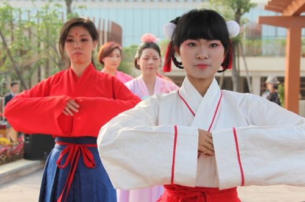

什么是花朝节?花朝节的习俗你知道吗？

漳州30名汉服美女在花朝节给花过生日
风髻露鬓，淡扫娥眉眼含春，这样古典美女就在漳州漳州。昨天是花朝节，漳州琉璃汉服社三十多个姑娘用这样的方式，跟花儿说声“生日快乐”。 还有一个目的，就是告诉市民这个鲜为人知的传统节日。 古人通过观察，发现每年的这个时候，万物复苏，鲜花逐渐盛开，所以就将这天定为花的节日。 昨天下午两点半，在漳州市区一酒店，姑娘们先祭拜花神，供桌上摆了鲜花、水果、香炉、酒壶和酒杯。模特走秀看得多，可汉服美女走秀不多见。
秦朝的曲裾，隋唐五代的高腰襦裙，初唐时期的对襟齐胸襦裙……汉服社的姑娘还一一为市民讲解服饰的风格。 走秀之后，姑娘们移步到郁郁葱葱的树旁，把红色的彩绸绑在树枝上。据说这是“赏红挂红”的习俗。 清朝张春华《沪城岁事衢歌》诗中也有这一习俗的真实写照，“春到花朝染碧丛，枝梢剪采袅东风。蒸霞五色飞晴坞，画阁开尊助赏红”。 花朝节有哪些习俗 1.踏青、赏红挂红：也有种花、栽树、采戴荠菜花、文人宴饮赋诗、男童蓄顶发、女孩穿耳洞等习俗。 2.挂“花神灯”：夜间在树枝上挂“花神灯”，这是姑娘展示自己好手艺的时候。 3.拜花神庙：众多的花农花贩及从事其他种植业的农民会集花神庙前，杀牲供果或演戏。 4.吃百花糕：据说，百花糕是唐朝女皇武则天的发明。有一年的花朝节，武则天率众位宫女游园赏花。 看到那些千娇百媚、争奇斗妍的花儿，她突发奇想让宫女们采集各种花朵，回宫之后和米捣碎，蒸制成香糯可口的糕点，就是百花糕。 以后，每逢花朝节武则天都把百花糕作为礼物赏赐给大臣们。 5.预测天气：民间还有以“花朝日”天气晴雨预卜年成丰欠的，谚云：“有利无利，但看二月十二。”这天，切忌有雷雨，民谚曰：“雷打百花心，百样无收成。”